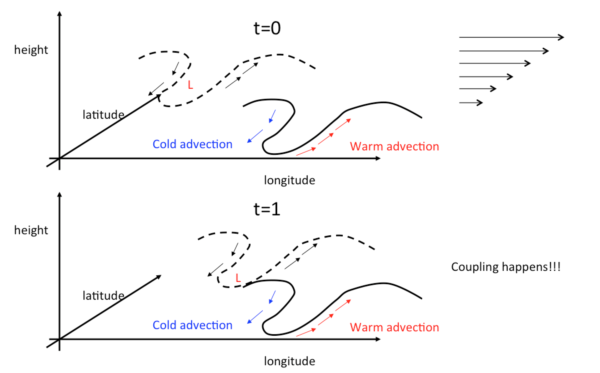
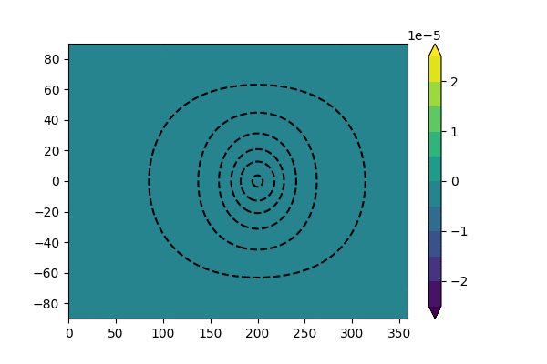

Week 2: Predictability source in atmosphere#
In this week, we will talk about the potential predictability source in the atmosphere. Before we dig right in, let’s quickly recap what we learned last week. We know the predictability is defined as “when” we can no longer differentiate the forecast distributions and the climatological distribution (i.e., (1)). We also know the error growth, which can be formulated as \(\mathrm{exp} \int_{t_0}^{t} \frac{dF}{d\mathbf{X}} dt'\) (5), strongly depends on where the integration starts and where it has been through (just like our life!). Thus, the most predictable components are usually those components with the longest memory (i.e., \(\int_{t_0}^{t} \frac{dF}{d\mathbf{X}} dt'\) is small).
The origins of predictability (Scale Separation) and balanced dynamics#
In a dynamical system, we can use scale analysis to identify the phenomenon with the longest memory and our Earth atmosphere is no exception. The atmosphere can be described by the equations of motion of a fluid.
where \(\mathbf{u}\) is momentum in vector form, \(p\) is pressure, \(\rho\) is density, \(\nu\) is the kinematic viscosity and \(\mathbf{F}\) is the external forces such as gravity. The second equation is the mass conservation, which will show up again in the later section when we talk about the ensemble forecast. The third equation is the thermodynamics equation, where \(\theta\) is the potential temperature, \(c_p\) is the heat capacity of air at a constant pressure, and \(\dot{Q}\) is the diabatic process. The first equation of (8) is so-called Navier-Stokes equation. If we drop the viscosity term, it is called Euler equation. With a few steps of assumptions (i.e., no acoustic wave, hydrostatic and geostrophic balances and beta plane, see Vallis Ch 5.4 for detailed derivations), we can further simplify the model to a single-variable prognostic equation, which describes the time evolution of Rossby wave (9).
The first equation of (9) is quasi-geostrophic vorticity equation, where \(\zeta=\nabla\times\mathbf{u}\), \(v_g\) is the meridional component of the geostrophic wind, \(f_o\) is the Coriolis acceleration at the reference latitude, \(\beta\) is the meridional gradient of Coriolis acceleration \(\frac{df}{dy}\) and \(\nabla\cdot \mathbf{u_a}\) is the convergence/divergence of ageostrophic wind. The second equation is the thermodynamics equation with the hydrostatic assumption. We drop the diabatic term for simplification. From the last equation of (9), we can easily find that the adiabatic cooling/heating by vertical motion (\(N^2\omega\)) is always balanced by the horizontal temperature advection (\(\mathbf{u_g}\cdot\nabla b'\)).
By combining the two equations in (9) with continuity equation, we can have quasi-geostrophic potential vorticity equation (QG-PV).
or
where \(\nabla^2\psi =\zeta\) and \(\nabla^2\psi =\frac{1}{f}\nabla^2\phi\). The QG-PV equation can also be derived by using Kelvin circulation theorem.
The reason why we can implement these physical assumptions (no acoustic wave, hydrostatic and geostrophic balances) is that the corresponding phenomena have relatively short characteristic timescales (decorrelation time) compared to the timescales of weather (or the Rossby wave). For example, a normal acoustic wave can travel a few hundred meters to a few kilometers before its amplitude decays to the e-folding scale and the whole process only happens within a few seconds. For a gravity wave, it can travel over 100 kilometers to a few thousand kilometers before reaching the e-folding scales. However, the gravity wave speed can be much higher than the Rossby wave, which enables it to travel across the world within a few days. One should notice that the gravity wave is non-dispersive. This indicates that all gravity waves travel in a similar speed regardless of the wave length. The Rossby wave, on the other hand, is a dispersive wave and thus its timescales depends on the wave length. Due to the earth rotation, only a small portion of energy can be converted to the eddy kinetic energy, while most of the energy is trapped in the zonal mean structure [Lor55]. In the regions away from tropics, the so-called “eddy” is dominated by the Rossby wave dynamics (10). In (dry) Rossby wave dynamics, the only prognostic variable is PV while other fields (e.g., horizontal wind and vertical motion) can be diagnosed by giving the PV field. Because of this 1-on-1 relation among wind, stream function and PV field, the Rossby wave dynamics is also called balanced dynamics. “Balance” implies that the phenomena with timescales shorter than Rossby wave have reached a dynamical equilibrium state and thus their time tendency can be omitted.
By observing the (11), one can find there are two components in PV, the barotropic vorticity (\(\nabla^2\psi+\beta\), i.e., vorticity in a single layer or vorticity over different layers with the same sign) and baroclinic vorticity (\(\frac{\partial }{\partial z}(\frac{f^2}{N^2}\frac{\partial\psi}{\partial z})\), i.e., vorticity difference in vertical direction). Thus, for the growth of PV, there are two different pathways, either through the generation of barotropic component or through the generation of baroclinic component. While both processes can happen at the same time, one is usually more dominant than the other and which one is more important depends on the regions of interest. In most cases, the mid-latitude frontal geneses (weather scales) are associated with the baroclinic instability, where the counter-propagating wave over different vertical layers advected by the vertical wind shear leads to the growth of baroclinic components FIG4.

Fig. 4 A schematic diagram showing how the counter-propagating waves over different vertical layers amplify each other. When t=0, the upper-level trough is delayed the lower-level trough by more than 0.25 wave length. However, due to the existence of vertical wind shear, the upper-level trough propagates faster than the lower level trough. In addition, we also know the geopotential height above the near-surface cold advection will decrease with time according to the hydrostatic balance. Thus, when the upper-level trough is spatially collocated with the near surface cold advection, it will be strengthened by the cold advection. This vertical coupling process can increase the amplitude PV, where vertical wind shear and counter-propagating waves are necessary criteria for baroclinic instability.#
The other key process for the growth of PV is the barotropic instability. In barotropic instability, the counter-propagating wave happens in meridional direction rather than the vertical direction. Thus, the necessary condition for barotropic instability is the horizontal wind shear. Both barotropic and baroclinic instabilities will lead to the exponential growth of PV anomaly, i.e., \(\frac{Dq'}{Dt}\sim \mathrm{exp}(\sigma t)\), where \(\sigma\) is the growth rate of this system.
Now, some of you might have noticed the connection between (10) and (5). If we linearize the QG-PV equation by assuming \(\mathbf{\bar{u}}\approx U_m\), i.e., the mean flow is dominated by the zonal mean wind, we will find the growth of PV perturbation strongly depends on the existence of wind shear. Let us make this statement precise, because “where can errors grow at all?” is exactly the question a forecaster is asking.
The necessary condition for instability#
Barotropic and baroclinic instabilities look like two different pictures (meridional versus vertical counter-propagating waves), but they are two faces of the same statement about the sign of the background PV gradient. Consider a zonally uniform basic state \(\mathbf{u}=U(y,z)\mathbf{i}\) in thermal wind balance, with streamfunction \(\Psi\) such that \(U=-\partial\Psi/\partial y\). Its QG-PV follows directly from (11),
and its meridional gradient is
The two shear terms are precisely the barotropic and baroclinic contributions we identified in (11). Keep this in mind: everything below is a constraint on the sign of (13).
Now decompose the flow into a basic state plus a small perturbation, \(q=Q+q'\) and \(\psi=\Psi+\psi'\), and retain only terms linear in the perturbation. This is nothing other than the tangent linear model of (5), with \(\frac{dF}{d\mathbf{X}}\) evaluated on the basic state:
Note that the only way the basic state enters the perturbation dynamics is through advection by \(U\) and through \(\partial Q/\partial y\). The interior equation must be closed by a thermodynamic equation at the two horizontal boundaries (the ground and the tropopause), where \(\omega=0\) and the second equation of (9) becomes a pure advection equation for buoyancy,
where the last relation is just thermal wind: a vertical shear at the boundary is a meridional temperature gradient at the boundary.
Because the coefficients depend on \(y\) and \(z\) but not on \(x\) or \(t\), we can look for normal-mode solutions \(\psi'(x,y,z,t)=\mathrm{Re}\left[\tilde{\psi}(y,z)e^{ik(x-ct)}\right]\) with a complex phase speed \(c=c_r+ic_i\). The perturbation then behaves as \(e^{ik(x-c_rt)}e^{kc_it}\), i.e. a wave propagating at \(c_r\) whose amplitude grows as \(\mathrm{exp}(\sigma t)\) with \(\sigma=kc_i\). The question “is the atmosphere unstable?” is therefore the question “can \(c_i\) be non-zero?” Substituting into (14) and (15) gives
We cannot solve this for a general \(U(y,z)\), but we do not need to: we only want to know when \(c_i\neq0\) is possible. Multiply the first equation of (16) by \(\tilde{\psi}^*\) and integrate over the domain. Integrating by parts in \(y\), assuming \(\tilde{\psi}=0\) at the meridional walls (or that they are quiescent latitudes),
and in \(z\), where the boundary term does not vanish but is instead replaced using the second equation of (16),
Collecting the terms,
The first line is real and positive definite, so it carries no information about \(c_i\); the imaginary part of the second line must vanish all by itself. Using \(\frac{1}{U-c}=\frac{U-c^*}{|U-c|^2}\), whose imaginary part is \(c_i/|U-c|^2\), we obtain
Here is the punchline. If the flow is to be unstable, \(c_i\neq0\), and therefore the integral itself must vanish:
Every weight \(|\tilde{\psi}|^2/|U-c|^2\) in (21) is positive. A sum of positive-weighted terms can only cancel if the terms do not all have the same sign. This is the Charney-Stern-Pedlosky (CSP) necessary condition for instability: at least one of the following must hold,
\(Q_y\) changes sign somewhere in the interior;
\(Q_y\) has the opposite sign to \(U_z\) at the upper boundary \(z=H\);
\(Q_y\) has the same sign as \(U_z\) at the lower boundary \(z=0\);
\(U_z\) has the same sign at the upper and lower boundaries (a distinct condition from 2 and 3 when \(Q_y=0\)).
Let us read these conditions physically, because they map one-to-one onto the two instabilities discussed above.
Barotropic instability. Drop all vertical structure, so the \(F\) terms disappear and (21) collapses to \(\int Q_y|\tilde{\psi}|^2/|U-c|^2dy=0\) with \(Q_y=\beta-\partial^2U/\partial y^2\). Instability therefore requires \(\beta-\partial^2 U/\partial y^2\) to change sign somewhere in the domain, which is the Rayleigh-Kuo criterion. With \(\beta=0\) this is Rayleigh’s classical inflection point theorem: the jet profile must possess an inflection point. This is the precise version of the loose statement that “horizontal wind shear is the necessary condition for barotropic instability” – it is not the shear itself but the curvature of the shear, measured against \(\beta\), that matters. A jet that is too broad, or a \(\beta\) that is too large, is stable no matter how strong the wind is.
Baroclinic instability. In the Earth’s mid-latitude troposphere, \(Q_y\) in the interior is usually dominated by \(\beta\) and is positive nearly everywhere, so condition 1 is typically not satisfied. Instead, instability is normally achieved through condition 3: the surface westerly shear \(U_z(0)>0\) has the same sign as the interior \(Q_y>0\). By thermal wind, \(U_z(0)>0\) means an equatorward-decreasing surface temperature, i.e. the pole-to-equator temperature gradient maintained by differential solar heating. The mid-latitude atmosphere is thus baroclinically unstable by construction – radiative forcing continuously restores the very gradient that the instability consumes.
The role of the boundary term is easier to see with Bretherton’s trick: a buoyancy gradient at a rigid boundary is dynamically equivalent to a delta-function sheet of interior PV gradient just inside the boundary, with sign opposite to \(U_z\) there. Conditions 2-4 are then all just special cases of condition 1 – the PV gradient must change sign somewhere in the domain, boundaries included. Two regions of opposite-signed PV gradient can each support a Rossby wave, and those two waves propagate in opposite directions relative to the local flow. That is exactly the counter-propagating wave pair sketched in FIG4: the vertical shear allows them to become phase-locked at a favourable relative phase, and once locked, each wave reinforces the other and both grow.
Two caveats worth stating clearly. First, these are necessary, not sufficient, conditions: flows exist that satisfy the criterion yet remain stable to infinitesimal perturbations. Second, the criterion says nothing about how fast the growth is. For that we need the actual eigenvalue problem (16), which we will solve in the homework assignment using the Philips two-layer model – the discrete two-level version of the analysis above, in which the sign change of \(Q_y\) becomes a simple threshold on the vertical shear. A useful rule of thumb from the continuous (Eady) problem is the maximum growth rate \(\sigma_{E}\approx0.31\frac{f}{N}\left|\frac{\partial U}{\partial z}\right|\), which for typical mid-latitude values gives an e-folding time of roughly one to two days.
Note
Why a stability criterion is a predictability statement. (14) is the tangent linear model, so the CSP condition is precisely a statement about the spectrum of \(\frac{dF}{d\mathbf{X}}\) in (5). Where the criterion is violated, the linear operator has no growing normal mode and small initial errors cannot amplify exponentially; where it is satisfied, any initial error with a projection onto the unstable mode grows as \(\mathrm{exp}(kc_it)\). This is why the initial (roughly 0-3 day) error growth in a global forecast is not distributed uniformly over the globe but is concentrated in the baroclinic zones – storm track entrance regions, strong surface temperature gradients, strong upper-level jets. It is also why the Eady growth rate is used operationally as a cheap diagnostic of “where should we put more observations today?”, and why singular vectors and bred vectors, which we will meet when we discuss ensemble forecasting, systematically pick out these same regions.
Note
Here are a few useful physical connections between the first and the second laws of thermodynamics equation, where potential temperature is the key ingredient. From the first law of thermodynamics equation, we know there are two ways to change the internal energy, either through “heat” or “work” (22)
where \(dU=c_v dT\). By adopting \(dP\alpha=Pd\alpha+\alpha dP\) and \(P\alpha=RT\), we can rewrite (22) to
Then, divide the whole equation by \(T\) and adopt the ideal gas law, we can find what left on the l.h.s is entropy \(\dot{Q}/T\) and on the r.h.s. is \(c_pdT/T-RdP/p\), which is the definition of potential temperature. Thus, the conservation of potential temperature is mathematically identical to the conservation of entropy.
From (8) to (9), we can simply use the definition of buoyancy, i.e., \(b'=-\frac{\rho'}{\bar{\rho_0}}g=\frac{\theta'}{\bar{\theta}}g\) and the hydrostatic approximation (i.e., \(b_0=-g\rho_0\) You will need to finish the last step in the homework assignment) to get the hydrostatic thermodynamics equation.
Atmospheric Blocking#
A key process that can provide additional predictability is the occurrence of atmospheric blocking. Blocking is a process where the negative PV anomaly cuts off from its adjacent ridge and forms a region with closed PV contour. Different from the elongated feature of trough and ridge, the shape of blocking is relatively round. Due to the inverse cascade of large-scale kinetic energy (more concentrated to the large-scale feature), a round PV is less likely to dissipate until either it is eroded by diabatic process or move back into low PV regions. Thus blocking usually sustains longer than an elongated PV feature.
While blocking is an important predictability source, it is still an unsolved problem. To the best of our knowledge, there are a few processes such as wave activity and teleconnection can change the occurrence frequency of blocking [HMB16]. In numerical experiments, the models with higher spatial resolution tend to simulate more reasonable blocking frequency suggesting the importance of upscale cascade of small-scale wave energy. There are a few interesting mechanisms proposed by Dr. Nakamura at U Chicago, who used a traffic jam model to describe the potential mechanisms of atmospheric blocking. [NH18]
Teleconnections#
While the discussion above focuses on the internal dynamics of PV, the external forcing can play important roles for timescales longer than 2 weeks. In equation (9), we omit the external forcing. Thus, the vertical motion-induced adiabatic cooling/warming is always balanced by the horizontal temperature advection. However, with the existence of diabatic term, the balance can change. Here, we provide two different cases to demonstrate how the timescales of external forcing determines the predictability of mid-latitude weather.
In the first case, the characteristic timescales of \(\dot{Q}\) in (8) is much shorter or comparable to the timescales of Rossby wave (24).
In this case, the balance happens within horizontal temperature advection, vertical motion and external forcing. From a climate perspective, the external forcing is dominated by the radiative forcing. Thus, this balance is also called “radiative-advective-convective equilibrium” (RACE). In general, the whole process of RACE (instability adjustment) happens within 2 weeks. For longer timescales, we can only have their equilibrium statistics (i.e., given any two components, we can derive the third).
The second case is that the characteristic timescales of \(\dot{Q}\) in (8) is much longer than the Rossby wave timescales. In this case, the internal dynamics of PV can be considered as a dissipative process, which is always balanced by the external forcing (25) (also see [HK81] for details).
One classic example is the tropical-convection forced tropical-extratropical teleconnection. The large-scale tropical convection such as Madden-Julian oscillation or El Ni~no Southern oscillation (ENSO) can generate large-scale divergence in the upper troposphere. The divergence can perturb the extratropical storm tracks and generate stationary Rossby wave propagating to the extratropical regions. In this case, timescales of forced response is determined by the timescales of forcing rather than the timescales of internal dynamics. Therefore, the predictability of a forced system can be much longer than the one purely determined by the internal dynamics since the external forcings are usually characterized by longer life cycles (e.g., the life cycle of MJO is about 20-90 days and ENSO is about 2-7 years). One prevailing research field is looking for the “forecast opportunity” from subseasonal to longer timescales and the so-called “forecast opportunity” indicates the “external forcing”.
The animation below is an example of tropical-extratropical teleconnection in a barotropic model, where we force the model with a constant divergence forcing (i.e., \(\sigma\sim 0\)). We can find in the later period of integration, the forced response gradually reach a equilibrium state. Similar large-scale patterns can also be found over the extratropical regions if we take the monthly average of 500hPa geopotential height.

Fig. 5 An example of tropical-extratropical teleconnection in a barotropic model. The model is forced by a constant divergence flow (dashed line). The shading shows the vorticity field.#
\
Note
Tropical-extratropical teleconection was first discovered by Bjerknes (1969) [Bje69] (although he didn’t spell it out). Then theory was mature around 1980s [HK81], where Sir Brian Hoskins used primitive equation model to investigate the underpinning dynamics. The name of “Rossby wave source” was also established from Sir Brian Hoskins’ work.
References#
Jakob Bjerknes. Atmospheric teleconnections from the equatorial pacific. Monthly weather review, 97(3):163–172, 1969.
Stephanie A Henderson, Eric D Maloney, and Elizabeth A Barnes. The influence of the madden–julian oscillation on northern hemisphere winter blocking. Journal of Climate, 29(12):4597–4616, 2016.
Brian J Hoskins and David J Karoly. The steady linear response of a spherical atmosphere to thermal and orographic forcing. Journal of the Atmospheric Sciences, 38(6):1179–1196, 1981.
Edward N Lorenz. Available potential energy and the maintenance of the general circulation. Tellus, 7(2):157–167, 1955.
Noboru Nakamura and Clare SY Huang. Atmospheric blocking as a traffic jam in the jet stream. Science, 361(6397):42–47, 2018.